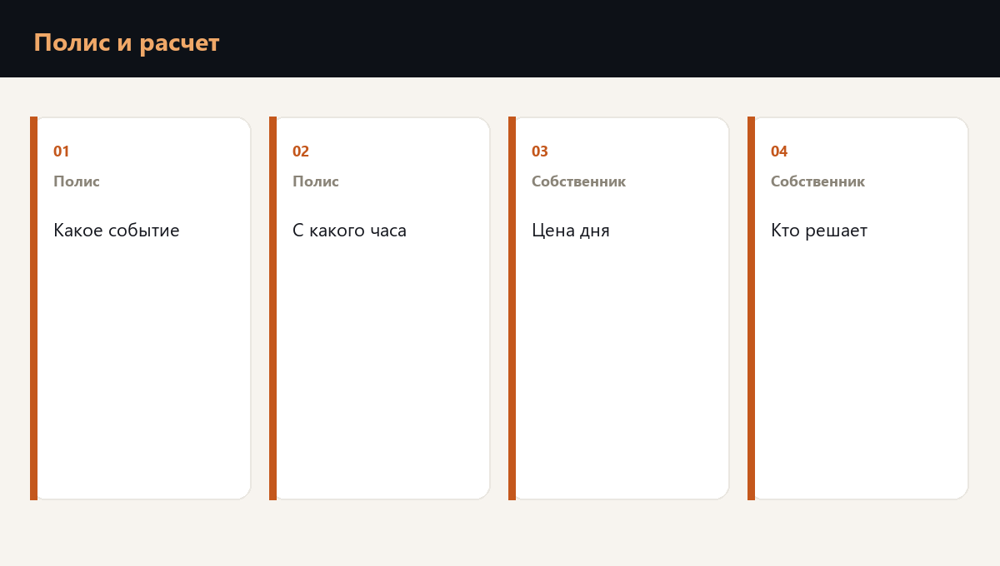

Страхование простоя после БПЛА возмещает часть оговоренного убытка на оговоренных условиях. Оно не назначает роли, не пишет поставщику и не возвращает выпуск. Эти три вещи собственник считает и устраивает сам, до разговора о полисе.

Что полис обычно делает
Полис простоя описывает, какой перерыв он признает, с какого часа начинает считать и какие документы просит. Формулировки отличаются от договора к договору. Читать стоит определение события, франшизу по времени и список исключений.
| Вопрос к полису | Зачем он собственнику |
|---|---|
| Какое событие признано | Попадает ли остановка площадки в текст |
| С какого часа идет счет | Совпадает ли пауза с вашим днем простоя |
| Какие доказательства нужны | Журнал решений и переписка готовятся заранее |
| Что исключено | Простой по этой причине остается на компании |
- Полис читают рядом с ценой своего дня.
- Пауза полиса, которая длиннее вашего допустимого простоя, оставляет дыру.
- Исключение в конце договора отменяет обещание в начале.
- Выплата приходит после документов. Выпуск нужно держать до нее.
Расчет, который остается на собственнике
Собственник записывает цену дня по узлу, долю выпуска, которая теряется безвозвратно, штраф и стоимость возврата к прежней производительности. Эта четверка нужна и для полиса, и для решения, что дублировать.
Страховая компания в этот час не управляет сменой и не объясняет заказчику новый срок. Если расчет дня не сделан, компания узнает размер дыры вместе с событием.
Полис это слой денег после события. Карта узлов, роли и второй контур отгрузки это слой, который уменьшает само событие для бизнеса.
Как проверка соединяет полис и расчет
Проверка готовности к атаке БПЛА ставит рядом текст вашего покрытия и цену дня площадки: где полис начинает счет, какой простой остается на компании и какое решение собственник принимает сам.
Частые вопросы
Полис план не заменяет. Он платит по своим условиям после документов. Остановка, письма и выпуск в этот день остаются на компании.
Журнал решений со временем, переписку с заказчиком о новом сроке и расчет потерянного дня. Это те же записи, которые нужны директору.
Сравнивать не с чем. Лимит и пауза полиса имеют смысл только рядом с вашей цифрой дня и с тем, сколько дней компания проживает на своих деньгах.
Готова ли команда к первому часу кризиса
Планы проверяются не чтением, а сценарием. Диагностика покажет пробелы, корпоративный формат отрабатывает их с вашей командой на ваших процессах.